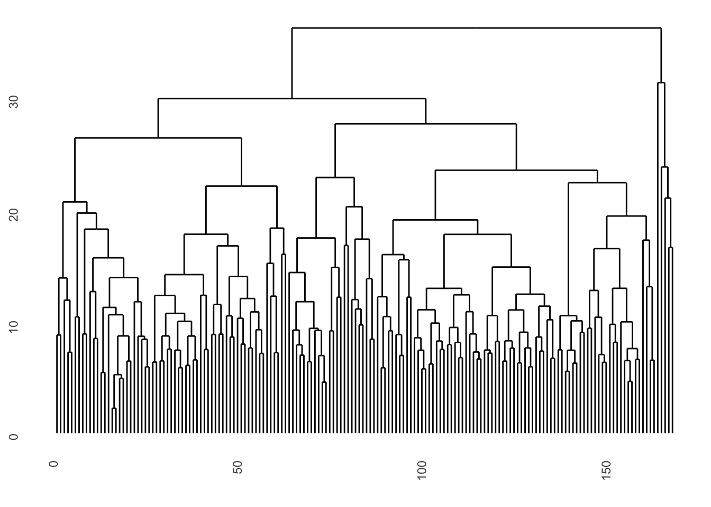
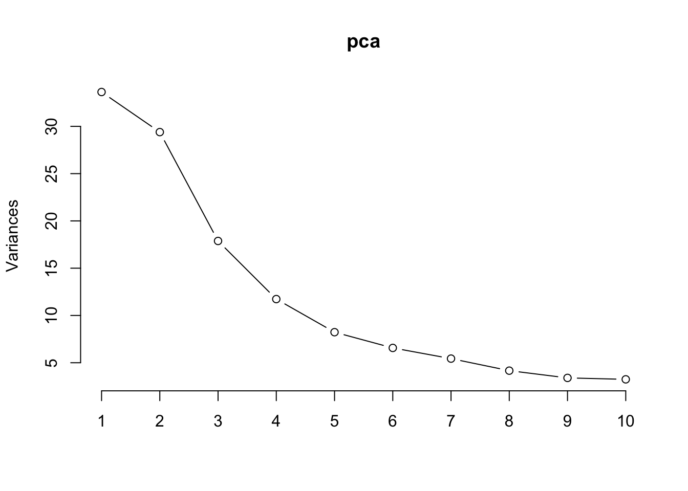
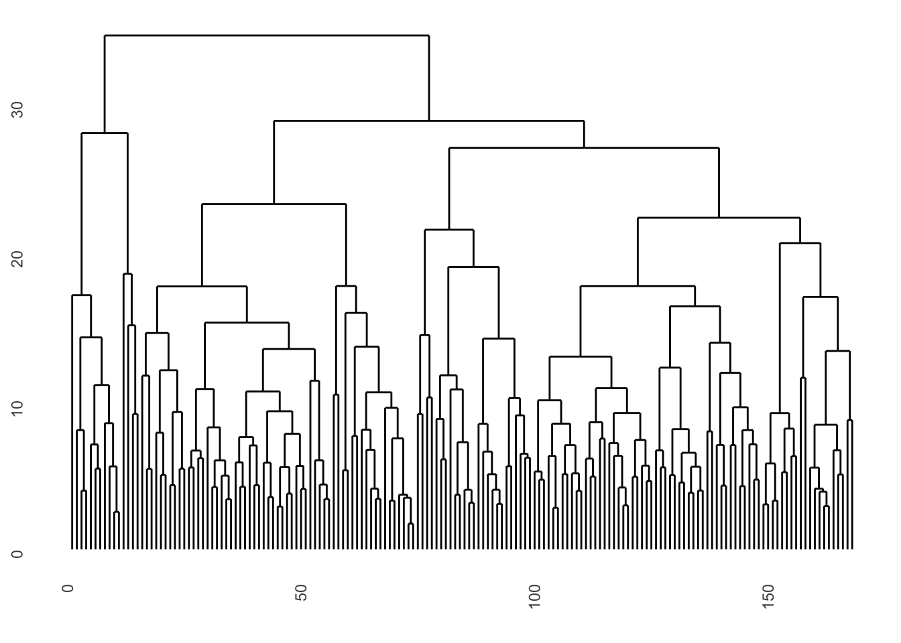
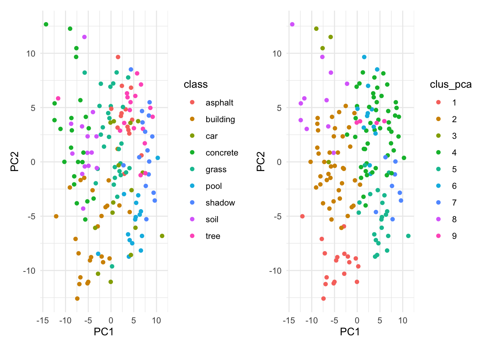
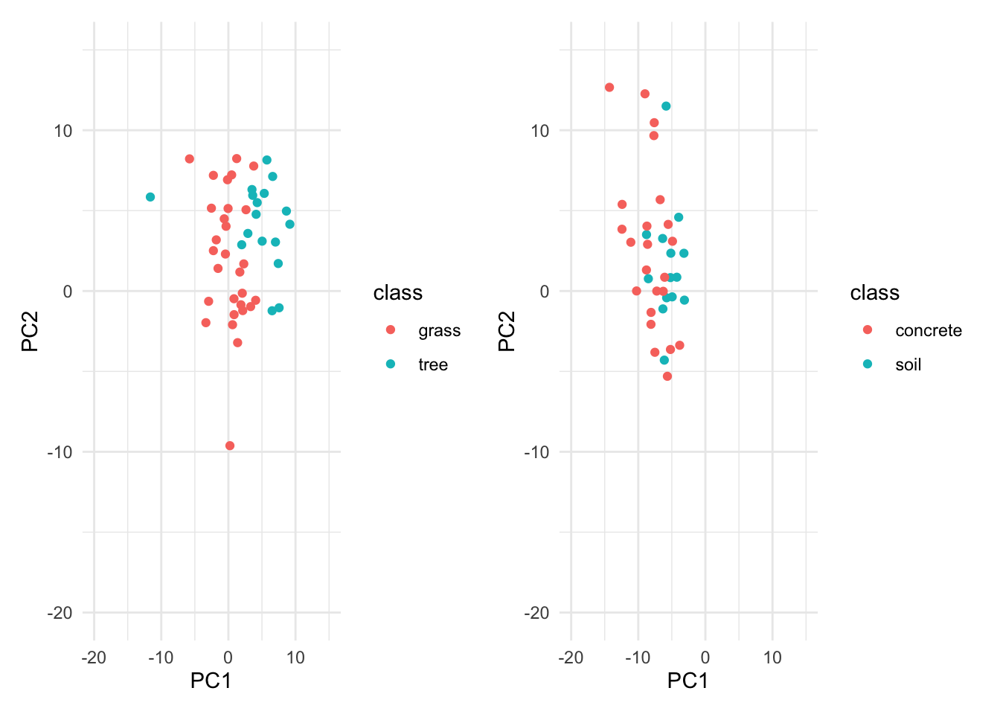

# remove the class column and standardize the datadf_unsupervised <- df[, -1]df_unsupervised <-scale(df_unsupervised)
hierarchical clustering
# set the seed for reproducibilityset.seed(123)# hierarchical clustering with euclidean distance and complete linkagedistances_hc_eucl <-dist(df_unsupervised, method ="euclidean")result_hc_eucl_comp <-hclust(distances_hc_eucl, method ="complete")ggdendrogram(result_hc_eucl_comp, labels =FALSE)

# save the clustering result as a factorclus_hc_eucl_comp <-as.factor(cutree(result_hc_eucl_comp, 9))
Values close to 1 indicate stable clusters, so the first 3, fifth and seventh clusters have relatively higher stability.
External validity
df_labels <- dfdf_labels$cluster_hc_eucl_comp <- clus_hc_eucl_comp # Add cluster assignments to the original dataset# Count the number of occurrences of each class within each clustercluster_hc_eucl_comp_mapping <- df_labels %>%group_by(cluster_hc_eucl_comp, class) %>%summarise(count =n(), .groups ="drop") %>%arrange(cluster_hc_eucl_comp, desc(count)) # Ensure sorting by most frequent classcluster_hc_eucl_comp_mapping
# Select the most frequent class for each clustercluster_hc_eucl_comp_lookup <- cluster_hc_eucl_comp_mapping %>%group_by(cluster_hc_eucl_comp) %>%filter(count ==max(count)) %>%# Select the most frequent classungroup() %>%select(cluster_hc_eucl_comp, class) # Keep only cluster-class mappingcluster_hc_eucl_comp_lookup
# Join the mapping back to the original datasetdf_labels <- df_labels %>%left_join(cluster_hc_eucl_comp_lookup, by ="cluster_hc_eucl_comp", , suffix =c("", "_pred_hc_eucl_comp"))df_labels$class <-as.factor(df_labels$class)df_labels$class_pred_hc_eucl_comp <-as.factor(df_labels$class_pred_hc_eucl_comp)head(df_labels)
Warning in confusionMatrix.default(df_labels$class,
df_labels$class_pred_hc_eucl_comp): Levels are not in the same order for
reference and data. Refactoring data to match.
Confusion Matrix and Statistics
Reference
Prediction asphalt building car concrete grass pool tree shadow soil
asphalt 13 0 0 0 1 0 0 0 0
building 1 18 0 1 5 0 0 0 0
car 0 4 9 0 0 2 0 0 0
concrete 0 2 0 21 0 0 0 0 0
grass 2 1 0 5 21 0 0 0 0
pool 0 1 0 0 1 13 0 0 0
tree 0 0 0 1 16 0 0 0 0
shadow 11 0 0 0 5 0 0 0 0
soil 0 0 0 14 0 0 0 0 0
Overall Statistics
Accuracy : 0.5655
95% CI : (0.487, 0.6416)
No Information Rate : 0.2917
P-Value [Acc > NIR] : 1.351e-13
Kappa : 0.4984
Mcnemar's Test P-Value : NA
Statistics by Class:
Class: asphalt Class: building Class: car
Sensitivity 0.48148 0.6923 1.00000
Specificity 0.99291 0.9507 0.96226
Pos Pred Value 0.92857 0.7200 0.60000
Neg Pred Value 0.90909 0.9441 1.00000
Prevalence 0.16071 0.1548 0.05357
Detection Rate 0.07738 0.1071 0.05357
Detection Prevalence 0.08333 0.1488 0.08929
Balanced Accuracy 0.73719 0.8215 0.98113
Class: concrete Class: grass Class: pool Class: tree
Sensitivity 0.5000 0.4286 0.86667 NA
Specificity 0.9841 0.9328 0.98693 0.8988
Pos Pred Value 0.9130 0.7241 0.86667 NA
Neg Pred Value 0.8552 0.7986 0.98693 NA
Prevalence 0.2500 0.2917 0.08929 0.0000
Detection Rate 0.1250 0.1250 0.07738 0.0000
Detection Prevalence 0.1369 0.1726 0.08929 0.1012
Balanced Accuracy 0.7421 0.6807 0.92680 NA
Class: shadow Class: soil
Sensitivity NA NA
Specificity 0.90476 0.91667
Pos Pred Value NA NA
Neg Pred Value NA NA
Prevalence 0.00000 0.00000
Detection Rate 0.00000 0.00000
Detection Prevalence 0.09524 0.08333
Balanced Accuracy NA NA
The clustering mostly struggled with the distinction between {“tree”, “grass”}, and {“asphalt”, “shadow”}, and {concrete”, “soil”}, which makes sense given the similarities between these sets of classes, and the difficulty of this clustering task.
Internal indices
# compute the silhouette coefficientmean(silhouette(cutree(result_hc_eucl_comp, 9), distances_hc_eucl)[, 3])
[1] 0.1625925
The Silhouette coefficient is low, indicating that the clustering might be inaccuate, with overlapping clusters and points being misclassified. This has been shown above when we use external validity.
sparse hierarchical clustering
# use pca to do dimension reductionpca <-prcomp(df_unsupervised,center =TRUE,scale =TRUE)screeplot(pca, type ='lines')

Using 9 principal components would be sufficient to explain the variability in the data.
# set the seed for reproducibilityset.seed(123)# use the first 9 principal components to run hierarchical clusteringdistances <-dist(pca$x[, 1:9], method ="euclidean")result_pca <-hclust(distances, method ="complete")ggdendrogram(result_pca, labels =FALSE)

# save the clustering result as a factorclus_pca <-as.factor(cutree(result_pca, 9))
Values close to 1 indicate stable clusters, so generally the stability here is worse than just using the hierarchical clustering, except for the 4th cluster.
External validity
df_labels$cluster_pca <- clus_pca # Add cluster assignments to the original dataset# Count the number of occurrences of each class within each clustercluster_pca_mapping <- df_labels %>%group_by(cluster_pca, class) %>%summarise(count =n(), .groups ="drop") %>%arrange(cluster_pca, desc(count)) # Ensure sorting by most frequent classcluster_pca_mapping
# Select the most frequent class for each clustercluster_pca_lookup <- cluster_pca_mapping %>%group_by(cluster_pca) %>%filter(count ==max(count)) %>%# Select the most frequent classungroup() %>%select(cluster_pca, class) # Keep only cluster-class mappingcluster_pca_lookup
# Join the mapping back to the original datasetdf_labels <- df_labels %>%left_join(cluster_pca_lookup, by ="cluster_pca", , suffix =c("", "_pred_pca"))df_labels$class <-as.factor(df_labels$class)df_labels$class_pred_pca <-as.factor(df_labels$class_pred_pca)head(df_labels)
Confusion Matrix and Statistics
Reference
Prediction asphalt building car concrete grass pool shadow soil tree
asphalt 10 0 0 0 4 0 0 0 0
building 0 14 0 8 2 0 1 0 0
car 0 2 4 1 0 8 0 0 0
concrete 0 0 0 23 0 0 0 0 0
grass 0 1 0 9 19 0 0 0 0
pool 0 1 0 0 1 13 0 0 0
shadow 2 0 0 0 7 0 7 0 0
soil 0 0 0 14 0 0 0 0 0
tree 0 0 0 1 16 0 0 0 0
Overall Statistics
Accuracy : 0.5357
95% CI : (0.4573, 0.6129)
No Information Rate : 0.3333
P-Value [Acc > NIR] : 5.472e-08
Kappa : 0.4628
Mcnemar's Test P-Value : NA
Statistics by Class:
Class: asphalt Class: building Class: car
Sensitivity 0.83333 0.77778 1.00000
Specificity 0.97436 0.92667 0.93293
Pos Pred Value 0.71429 0.56000 0.26667
Neg Pred Value 0.98701 0.97203 1.00000
Prevalence 0.07143 0.10714 0.02381
Detection Rate 0.05952 0.08333 0.02381
Detection Prevalence 0.08333 0.14881 0.08929
Balanced Accuracy 0.90385 0.85222 0.96646
Class: concrete Class: grass Class: pool Class: shadow
Sensitivity 0.4107 0.3878 0.61905 0.87500
Specificity 1.0000 0.9160 0.98639 0.94375
Pos Pred Value 1.0000 0.6552 0.86667 0.43750
Neg Pred Value 0.7724 0.7842 0.94771 0.99342
Prevalence 0.3333 0.2917 0.12500 0.04762
Detection Rate 0.1369 0.1131 0.07738 0.04167
Detection Prevalence 0.1369 0.1726 0.08929 0.09524
Balanced Accuracy 0.7054 0.6519 0.80272 0.90938
Class: soil Class: tree
Sensitivity NA NA
Specificity 0.91667 0.8988
Pos Pred Value NA NA
Neg Pred Value NA NA
Prevalence 0.00000 0.0000
Detection Rate 0.00000 0.0000
Detection Prevalence 0.08333 0.1012
Balanced Accuracy NA NA
The accuracy is also lower than that of plain hierarchical clustering.
p1 <- pca$x[, 1:9] %>%ggplot(aes(x = PC1, y = PC2, col = clus_pca)) +geom_point() +theme_minimal()p2 <- pca$x[, 1:9] %>%# filter(class %in% c("tree ", "grass ")) %>%ggplot(aes(x = PC1, y = PC2, col =as.factor(df$class))) +labs(col ="class") +geom_point() +theme_minimal()p2 + p1

# examples of where the clusters are easily to be misclassifiedp3 <- pca$x[which(df$class %in%c("tree ", "grass ")), 1:9] %>%ggplot(aes(x = PC1, y = PC2, col =as.factor(df$class[which(df$class %in%c("tree ", "grass "))]))) +labs(col ="class") +scale_x_continuous(limits =c(-20, 15)) +scale_y_continuous(limits =c(-20, 15)) +geom_point() +theme_minimal()p4 <- pca$x[which(df$class %in%c("soil ", "concrete ")), 1:9] %>%ggplot(aes(x = PC1, y = PC2, col =as.factor(df$class[which(df$class %in%c("soil ", "concrete "))]))) +labs(col ="class") +scale_x_continuous(limits =c(-20, 15)) +scale_y_continuous(limits =c(-20, 15)) +geom_point() +theme_minimal()p3 + p4

Internal indices
# compute the silhouette coefficientmean(silhouette(cutree(result_pca, 9), distances)[, 3])
[1] 0.1963163
The Silhouette coefficient is somewhat higher than that of the plain hierarchical clustering, which could due to that we were able to “identify” one more class, by giving a cluster the label “shadow”, which we weren’t able to do previously.